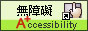

<!DOCTYPE html>
<html lang="zh-CN">
  <head>
    <meta charset="UTF-8">
    <meta name="viewport" content="width=device-width, initial-scale=1.0">
    <meta http-equiv="X-UA-Compatible" content="ie=edge">
    <title>彰化縣議會 </title>
    <link rel="stylesheet" href="https://maxcdn.bootstrapcdn.com/bootstrap/3.3.7/css/bootstrap.min.css">
    <link rel="stylesheet" href="../css/layout.css">
    <link rel="stylesheet" href="../iconfont/iconfont.css">
    <link href="../css/page/home.css" rel="stylesheet">
  </head>
  <body></body>
  <header class="header">
    <div class="container">
      <h1><a class="logo" href="/home" alt="home"></a></h1>
      <div class="row info">
        <div class="search" id="search">
          <form class="navbar-form" action="search/index.aspx?Parser=99,10,62" method="post">
            <input id="token_cs" name="token_cs" type="hidden" value="D69EB50B8B5691FBD7F72DB5588CC36E">
            <label for="kd">
              <input class="form-control" id="kd" tabindex="1" name="kd" type="text" value="全文檢索" onfocus="this.value='';">
            </label>
            <button class="btn btn-default" id="search_img" tabindex="1" type="submit"><i class="glyphicon glyphicon-search"></i></button>
          </form>
        </div>
        <!-- serach-->
        <ul class="nav navbar-nav"><a tabindex="1" href="#" accesskey="U" title="上方區域" style="color:#fff; float:left;">:::</a>
          <li><a tabindex="1" href="sitemap/index.aspx?Parser=99,13,67">網站導覽</a></li>
          <li><a tabindex="1" href="content/index.aspx?Parser=1,10,61">檢索查詢</a></li>
          <li><a tabindex="1" href="links/index.aspx?Parser=12,12,66">相關連結</a></li>
          <li><a tabindex="1" href="../home.aspx">回首頁</a></li>
        </ul>
        <div id="lang">
          <label for="leng_se">
            <select class="search_table form-control" id="leng_se" name="select" tabindex="1">
              <option value="">國語版</option>
              <option value="eng/">English</option>
              <option value="jp/">日本語</option>
              <option value="mobile/">行動版</option>
              <option value="kid/">兒童版</option>
            </select>
          </label>
          <label>
            <input class="btn btn-go" id="lng_btn" tabindex="1" type="button" alt="GO" value="GO">
          </label>
          <noscript>替代連結：<a tabindex="1" href="eng/">English</a>,<a tabindex="1" href="jp/">日本語</a>,<a tabindex="1" href="mobile/">行動版</a>,<a tabindex="1" href="kid/">兒童版 </a></noscript>
        </div>
      </div>
    </div>
  </header>
  <nav class="navbar">
    <div class="container">
      <!-- Brand and toggle get grouped for better mobile display-->
      <div class="navbar-header">
        <button class="navbar-toggle collapsed" type="button" data-toggle="collapse" data-target="#bs-example-navbar-collapse-1" aria-expanded="false"><span class="sr-only">Toggle navigation</span><span class="icon-bar"></span><span class="icon-bar"></span><span class="icon-bar"></span></button>
      </div>
      <!-- Collect the nav links, forms, and other content for toggling-->
      <div class="collapse navbar-collapse" id="bs-example-navbar-collapse-1">
        <ul class="nav navbar-nav">
          <li class="dropdown"><a class="dropdown-toggle" tabindex="2" href="/billboard/ActiveNote" data-toggle="dropdown">公布欄</a>
            <ul class="dropdown-menu dropdown-menu-left access-submenu">
              <li><a href="/billboard/ActiveNote" tabindex="3"><i class="glyphicon glyphicon-menu-right"></i>活動紀事</a></li>
              <li><a href="/billboard/ActiveScenes" tabindex="3"><i class="glyphicon glyphicon-menu-right"></i>活動花絮</a></li>
              <li><a href="/billboard/TenderInfo" tabindex="3"><i class="glyphicon glyphicon-menu-right"></i>招標資訊</a></li>
              <li><a href="/billboard/Recruit" tabindex="3"><i class="glyphicon glyphicon-menu-right"></i>徵才公告</a></li>
              <li><a href="/billboard/OfficialSearch" tabindex="3"><i class="glyphicon glyphicon-menu-right"></i>公報查詢</a></li>
              <li><a href="/billboard/LiveBroardcast" tabindex="3"><i class="glyphicon glyphicon-menu-right"></i>議事線上直播</a></li>
              <li><a href="/billboard/Video" tabindex="3"><i class="glyphicon glyphicon-menu-right"></i>影音專區</a></li>
              <li><a href="/billboard/Security" tabindex="3"><i class="glyphicon glyphicon-menu-right"></i>機關安全及保密宣導</a></li>
              <li><a href="/billboard/FileDownload" tabindex="3"><i class="glyphicon glyphicon-menu-right"></i>檔案下載</a></li>
            </ul>
          </li>
          <li class="dropdown"><a class="dropdown-toggle" tabindex="4" href="content/index.aspx?Parser=1,4,28" data-toggle="dropdown">議會沿革</a>
            <ul class="dropdown-menu dropdown-menu-left access-submenu">
              <li><a href="content/index.aspx?Parser=1,4,28" tabindex="5"><i class="glyphicon glyphicon-menu-right"></i>沿革</a></li>
              <li><a href="content/index.aspx?Parser=1,4,29" tabindex="5"><i class="glyphicon glyphicon-menu-right"></i>歷屆議會概況表</a></li>
              <li><a href="content/index.aspx?Parser=1,4,30" tabindex="5"><i class="glyphicon glyphicon-menu-right"></i>歷屆縣長任期對照表</a></li>
              <li><a href="content/index.aspx?Parser=1,4,31" tabindex="5"><i class="glyphicon glyphicon-menu-right"></i>歷屆議長、副議長照片</a></li>
              <li><a href="tour/index.aspx?Parser=13,4,32" tabindex="5"><i class="glyphicon glyphicon-menu-right"></i>歷屆成立大會團體照片</a></li>
              <li><a href="form/index.aspx?Parser=2,4,34" tabindex="5"><i class="glyphicon glyphicon-menu-right"></i>歷屆議員名錄</a></li>
            </ul>
          </li>
          <li class="dropdown"><a class="dropdown-toggle" tabindex="6" href="content/index.aspx?Parser=1,5,35" data-toggle="dropdown">議會簡介</a>
            <ul class="dropdown-menu dropdown-menu-left access-submenu">
              <li><a href="content/index.aspx?Parser=1,5,35" tabindex="7"><i class="glyphicon glyphicon-menu-right"></i>議會簡介</a></li>
              <li><a href="content/index.aspx?Parser=1,5,36" tabindex="7"><i class="glyphicon glyphicon-menu-right"></i>議會組織</a></li>
              <li><a href="content/index.aspx?Parser=1,5,121" tabindex="7"><i class="glyphicon glyphicon-menu-right"></i>議長的話</a></li>
              <li><a href="content/index.aspx?Parser=1,5,122" tabindex="7"><i class="glyphicon glyphicon-menu-right"></i>副議長的話</a></li>
              <li><a href="content/index.aspx?Parser=1,5,37" tabindex="7"><i class="glyphicon glyphicon-menu-right"></i>交通位置</a></li>
              <li><a href="content/index.aspx?Parser=1,5,38" tabindex="7"><i class="glyphicon glyphicon-menu-right"></i>樓層配置</a></li>
            </ul>
          </li>
          <li class="dropdown"><a class="dropdown-toggle" tabindex="8" href="member/index.aspx?Parser=99,6,40" data-toggle="dropdown">議員資訊</a>
            <ul class="dropdown-menu dropdown-menu-left access-submenu">
              <li><a href="member/index.aspx?Parser=99,6,40" tabindex="9"><i class="glyphicon glyphicon-menu-right"></i>議員一覽表</a></li>
              <li><a href="content/index.aspx?Parser=1,6,43" tabindex="9"><i class="glyphicon glyphicon-menu-right"></i>議政顧問</a></li>
              <li><a href="report/index.aspx?Parser=99,6,44" tabindex="9"><i class="glyphicon glyphicon-menu-right"></i>議員出國考察報告(第18屆)</a></li>
              <li><a href="form/index.aspx?Parser=3,6,45" tabindex="9"><i class="glyphicon glyphicon-menu-right"></i>表單下載</a></li>
            </ul>
          </li>
          <li class="dropdown"><a class="dropdown-toggle" tabindex="10" href="agenda/index.aspx?Parser=99,7,46" data-toggle="dropdown">議案審查</a>
            <ul class="dropdown-menu dropdown-menu-left access-submenu">
              <li><a href="agenda/index.aspx?Parser=99,7,46" tabindex="11"><i class="glyphicon glyphicon-menu-right"></i>議程資訊</a></li>
              <li><a href="council/index.aspx?Parser=99,7,47" tabindex="11"><i class="glyphicon glyphicon-menu-right"></i>議案審查</a></li>
              <li><a href="video/index.aspx?Parser=17,7,131" tabindex="11"><i class="glyphicon glyphicon-menu-right"></i>議事影音</a></li>
              <li><a href="http://cr101.chcc.gov.tw" tabindex="11"><i class="glyphicon glyphicon-menu-right"></i>議事錄查詢系統</a></li>
            </ul>
          </li>
          <li class="dropdown"><a class="dropdown-toggle" tabindex="12" href="form/index.aspx?Parser=2,8,49" data-toggle="dropdown">議事法規</a>
            <ul class="dropdown-menu dropdown-menu-left access-submenu">
              <li><a href="form/index.aspx?Parser=2,8,49" tabindex="13"><i class="glyphicon glyphicon-menu-right"></i>地方議政法規</a></li>
              <li><a href="form/index.aspx?Parser=2,8,50" tabindex="13"><i class="glyphicon glyphicon-menu-right"></i>財政預算法規</a></li>
              <li><a href="form/index.aspx?Parser=2,8,51" tabindex="13"><i class="glyphicon glyphicon-menu-right"></i>其他關係法規</a></li>
              <li><a href="form/index.aspx?Parser=2,8,52" tabindex="13"><i class="glyphicon glyphicon-menu-right"></i>相關法規解釋</a></li>
              <li><a href="form/index.aspx?Parser=2,8,53" tabindex="13"><i class="glyphicon glyphicon-menu-right"></i>縣議會組織職權及議事功能</a></li>
            </ul>
          </li>
          <li class="dropdown"><a class="dropdown-toggle" tabindex="14" href="ebook/index.aspx?Parser=99,9,54" data-toggle="dropdown">文宣出版</a>
            <ul class="dropdown-menu dropdown-menu-left access-submenu">
              <li><a href="ebook/index.aspx?Parser=99,9,54" tabindex="15"><i class="glyphicon glyphicon-menu-right"></i>卦山議壇</a></li>
              <li><a href="ebook/index.aspx?Parser=99,9,55" tabindex="15"><i class="glyphicon glyphicon-menu-right"></i>電子書</a></li>
              <li><a href="ecard/index.aspx?Parser=99,9,57" tabindex="15"><i class="glyphicon glyphicon-menu-right"></i>電子賀卡</a></li>
              <li><a href="wallpaper/index.aspx?Parser=99,9,58" tabindex="15"><i class="glyphicon glyphicon-menu-right"></i>桌布下載</a></li>
              <li><a href="epaper/index.aspx?Parser=99,9,59" tabindex="15"><i class="glyphicon glyphicon-menu-right"></i>電子報</a></li>
            </ul>
          </li>
          <li class="dropdown"><a class="dropdown-toggle" tabindex="16" href="pmail/index.aspx?Parser=99,11,77,64" data-toggle="dropdown">鄉親服務</a>
            <ul class="dropdown-menu dropdown-menu-left access-submenu">
              <li><a href="pmail/index.aspx?Parser=99,11,77,64" tabindex="17"><i class="glyphicon glyphicon-menu-right"></i>鄉親服務</a></li>
              <li><a href="pmail/list.aspx?Parser=99,11,65" tabindex="17"><i class="glyphicon glyphicon-menu-right"></i>議長與民有約</a></li>
            </ul>
          </li>
        </ul>
      </div>
    </div>
  </nav>
  <div class="fatfoot">
    <div class="container">
      <div class="row" style="margin:left:0;margin-right:0;">
        <div id="fat_footer">
          <div id="ff_btn">
            <input id="fat_btn" type="image" name="imageField2" src="../img/home/ff_close.jpg" alt="收合">
          </div>
          <ul class="clearfix" id="ff_btn1_area">
            <li><a href="table/index.aspx?Parser=5,3,23">公布欄</a>
              <ul>
                <li><a href="table/index.aspx?Parser=5,3,23" title="活動紀事">活動紀事</a></li>
                <li><a href="gallery/index.aspx?Parser=16,3,24" title="活動花絮">活動花絮</a></li>
                <li><a href="latestevent/index.aspx?Parser=9,3,25" title="招標資訊">招標資訊</a></li>
                <li><a href="latestevent/index.aspx?Parser=9,3,26" title="徵才公告">徵才公告</a></li>
                <li><a href="form1/index.aspx?Parser=20,3,27" title="公報查詢">公報查詢</a></li>
                <li><a href="video/index.aspx?Parser=17,3,130" title="議事線上直播">議事線上直播</a></li>
                <li><a href="video/index.aspx?Parser=17,3,134" title="影音專區">影音專區</a></li>
                <li><a href="form/index.aspx?Parser=3,3,135" title="機關安全及保密宣導">機關安全及保密宣導</a></li>
                <li><a href="form/index.aspx?Parser=2,3,136" title="檔案下載">檔案下載</a></li>
              </ul>
            </li>
            <li><a href="content/index.aspx?Parser=1,4,28">議會沿革</a>
              <ul>
                <li><a href="content/index.aspx?Parser=1,4,28" title="沿革">沿革</a></li>
                <li><a href="content/index.aspx?Parser=1,4,29" title="歷屆議會概況表">歷屆議會概況表</a></li>
                <li><a href="content/index.aspx?Parser=1,4,30" title="歷屆縣長任期對照表">歷屆縣長任期對照表</a></li>
                <li><a href="content/index.aspx?Parser=1,4,31" title="歷屆議長、副議長照片">歷屆議長、副議長照片</a></li>
                <li><a href="tour/index.aspx?Parser=13,4,32" title="歷屆成立大會團體照片">歷屆成立大會團體照片</a></li>
                <li><a href="form/index.aspx?Parser=2,4,34" title="歷屆議員名錄">歷屆議員名錄</a></li>
              </ul>
            </li>
            <li><a href="content/index.aspx?Parser=1,5,35">議會簡介</a>
              <ul>
                <li><a href="content/index.aspx?Parser=1,5,35" title="議會簡介">議會簡介</a></li>
                <li><a href="content/index.aspx?Parser=1,5,36" title="議會組織">議會組織</a></li>
                <li><a href="content/index.aspx?Parser=1,5,121" title="議長的話">議長的話</a></li>
                <li><a href="content/index.aspx?Parser=1,5,122" title="副議長的話">副議長的話</a></li>
                <li><a href="content/index.aspx?Parser=1,5,37" title="交通位置">交通位置</a></li>
                <li><a href="content/index.aspx?Parser=1,5,38" title="樓層配置">樓層配置</a></li>
              </ul>
            </li>
            <li><a href="member/index.aspx?Parser=99,6,40">議員資訊</a>
              <ul>
                <li><a href="member/index.aspx?Parser=99,6,40" title="議員一覽表">議員一覽表</a></li>
                <li><a href="content/index.aspx?Parser=1,6,43" title="議政顧問">議政顧問</a></li>
                <li><a href="report/index.aspx?Parser=99,6,44" title="議員出國考察報告(第18屆)">議員出國考察報告(第18屆)</a></li>
                <li><a href="form/index.aspx?Parser=3,6,45" title="表單下載">表單下載</a></li>
              </ul>
            </li>
            <li><a href="agenda/index.aspx?Parser=99,7,46">議案審查</a>
              <ul>
                <li><a href="agenda/index.aspx?Parser=99,7,46" title="議程資訊">議程資訊</a></li>
                <li><a href="council/index.aspx?Parser=99,7,47" title="議案審查">議案審查</a></li>
                <li><a href="video/index.aspx?Parser=17,7,131" title="議事影音">議事影音</a></li>
                <li><a href="http://cr101.chcc.gov.tw" title="議事錄查詢系統(另開視窗)" target="_blark" mhit="48">議事錄查詢系統</a></li>
              </ul>
            </li>
            <li><a href="form/index.aspx?Parser=2,8,49">議事法規</a>
              <ul>
                <li><a href="form/index.aspx?Parser=2,8,49" title="地方議政法規">地方議政法規</a></li>
                <li><a href="form/index.aspx?Parser=2,8,50" title="財政預算法規">財政預算法規</a></li>
                <li><a href="form/index.aspx?Parser=2,8,51" title="其他關係法規">其他關係法規</a></li>
                <li><a href="form/index.aspx?Parser=2,8,52" title="相關法規解釋">相關法規解釋</a></li>
                <li><a href="form/index.aspx?Parser=2,8,53" title="縣議會組織職權及議事功能">縣議會組織職權及議事功能</a></li>
              </ul>
            </li>
            <li><a href="ebook/index.aspx?Parser=99,9,54">文宣出版</a>
              <ul>
                <li><a href="ebook/index.aspx?Parser=99,9,54" title="卦山議壇">卦山議壇</a></li>
                <li><a href="ebook/index.aspx?Parser=99,9,55" title="電子書">電子書</a></li>
                <li><a href="ecard/index.aspx?Parser=99,9,57" title="電子賀卡">電子賀卡</a></li>
                <li><a href="wallpaper/index.aspx?Parser=99,9,58" title="桌布下載">桌布下載</a></li>
                <li><a href="epaper/index.aspx?Parser=99,9,59" title="電子報">電子報</a></li>
              </ul>
            </li>
            <li><a href="pmail/index.aspx?Parser=99,11,77,64">鄉親服務</a>
              <ul>
                <li><a href="pmail/index.aspx?Parser=99,11,77,64" title="鄉親服務">鄉親服務</a></li>
                <li><a href="pmail/list.aspx?Parser=99,11,65" title="議長與民有約">議長與民有約</a></li>
              </ul>
            </li>
            <div class="clean"></div>
          </ul>
        </div>
      </div>
    </div>
  </div>
  <div class="footer">
    <div class="container">
      <div class="row">
        <div class="goback">
          <noscript>Your browser can not support the JavaScript function, please use the Alt + ←(direction key) back to the Previous page.</noscript>
          <!-- <a href="javascript:history.back()" class="goback_back">goback--><a class="goback_top" href="#"><span class="glyphicon glyphicon-menu-up" aria-hidden="true"></span></a>
        </div>
        <!-- goback-->
        <div class="col-xs-12 col-sm-9 left">
          <p>Copyright© 2015彰化縣議會版權所有 ｜<a href="content/index.aspx?Parser=1,13,68">隱私權保護政策</a>｜<a href="content/index.aspx?Parser=1,13,69">網站安全政策</a> <a href="content/index.aspx?Parser=1,5,37">交通路線</a></p>
          <p>
            地址：50065 彰化市中山路二段464號 | 電話：04-7222125(0963-403519、0963-403520)
            | E-mail：<a href="mailto:ahnowang@mail.chcc.gov.tw">ahnowang@mail.chcc.gov.tw</a>
          </p>
          <p>請用IE、Firefox或Chrome瀏覽器及1024x768之解析度觀看本網站 <span>更新日期： <span class="f_date">2018-10-09</span> | 您是第 <span class="f_view">01992886</span> 位瀏覽者</span></p>
        </div>
        <div class="col-xs-12 col-sm-3 right">
          <ul>
            <li><a href="http://www.handicap-free.nat.gov.tw/Applications/Detail?category=20150629095651" target="_blank"></a></li>
            <li><a href="http://www.gov.tw" target="_blank"></a></li>
          </ul>
        </div>
      </div>
    </div>
  </div>
  <script src="https://ajax.googleapis.com/ajax/libs/jquery/1.12.4/jquery.min.js"></script>
  <script src="https://maxcdn.bootstrapcdn.com/bootstrap/3.3.7/js/bootstrap.min.js"></script>
  <script src="../js/main.js"></script>
</html>